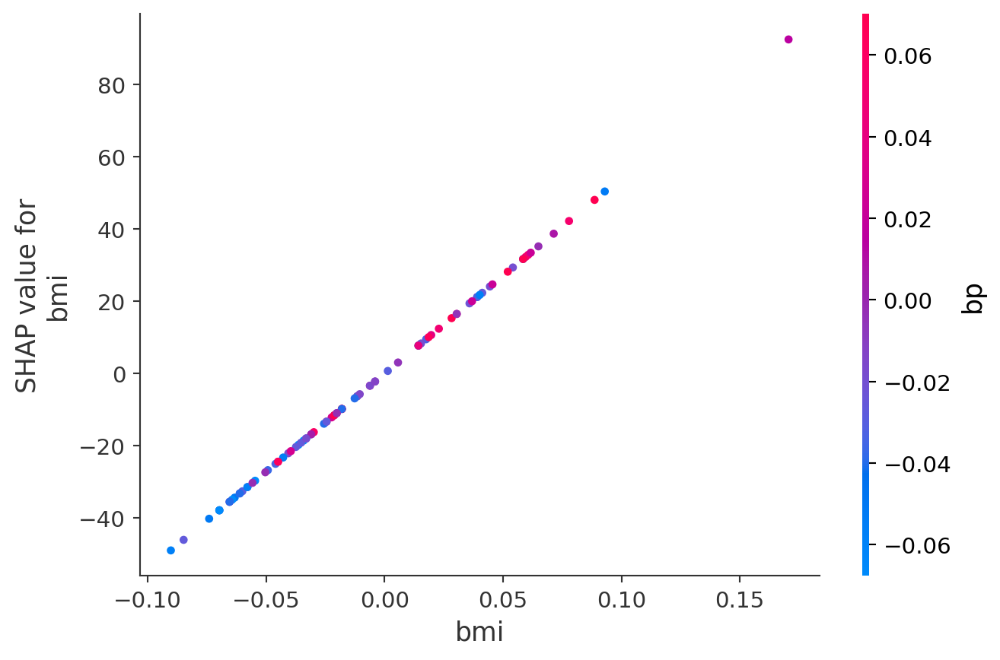

import numpy as np
import pandas as pd
from sklearn.datasets import fetch_california_housing
from sklearn.ensemble import GradientBoostingRegressor
from sklearn.model_selection import train_test_split
from sklearn.metrics import mean_squared_error
# Load data
housing = fetch_california_housing(as_frame=True)
X, y = housing.data, housing.target9 Supervised Learning
9.1 Decision Trees: Foundation
Decision trees are widely used supervised learning models that predict the value of a target variable by iteratively splitting the dataset based on decision rules derived from input features. The model functions as a piecewise constant approximation of the target function, producing clear, interpretable rules that are easily visualized and analyzed (Breiman et al., 1984). Decision trees are fundamental in both classification and regression tasks, serving as the building blocks for more advanced ensemble models such as Random Forests and Gradient Boosting Machines.
9.1.1 Algorithm Formulation
The core mechanism of a decision tree algorithm is the identification of optimal splits that partition the data into subsets that are increasingly homogeneous with respect to the target variable. At any node \(m\), the data subset is denoted as \(Q_m\) with a sample size of \(n_m\). The objective is to find a candidate split \(\theta\), defined as a threshold for a given feature, that minimizes an impurity or loss measure \(H\).
When a split is made at node \(m\), the data is divided into two subsets: \(Q_{m,l}\) (left node) with sample size \(n_{m,l}\), and \(Q_{m,r}\) (right node) with sample size \(n_{m,r}\). The split quality, measured by \(G(Q_m, \theta)\), is given by:
\[ G(Q_m, \theta) = \frac{n_{m,l}}{n_m} H(Q_{m,l}(\theta)) + \frac{n_{m,r}}{n_m} H(Q_{m,r}(\theta)). \]
The algorithm aims to identify the split that minimizes the impurity:
\[ \theta^* = \arg\min_{\theta} G(Q_m, \theta). \]
This process is applied recursively at each child node until a stopping condition is met.
- Stopping Criteria: The algorithm stops when the maximum tree depth is reached or when the node sample size falls below a preset threshold.
- Pruning: Reduce the complexity of the final tree by removing branches that add little predictive value. This reduces overfitting and improves the generalization accuracy of the model.
9.1.2 Search Space for Possible Splits
At each node in the decision tree, the search space for possible splits comprises all features in the dataset and potential thresholds derived from the values of each feature. For a given feature, the algorithm considers each unique value in the current node’s subset as a possible split point. The potential thresholds are typically set as midpoints between consecutive unique values, ensuring the data is partitioned effectively.
Formally, let the feature set be \(\{X_1, X_2, \ldots, X_p\}\), where \(p\) is the total number of features, and let the unique values of feature \(X_j\) at node \(m\) be denoted by \(\{v_{j,1}, v_{j,2}, \ldots, v_{j,k_j}\}\). The search space at node \(m\) includes:
- Feature candidates: \(\{X_1, X_2, \ldots, X_p\}\).
- Threshold candidates for \(X_j\): \[ \left\{ \frac{v_{j,i} + v_{j,i+1}}{2} \mid 1 \leq i < k_j \right\}. \]
The search space therefore encompasses all combinations of features and their respective thresholds. While the complexity of this search can be substantial, particularly for high-dimensional data or features with numerous unique values, efficient algorithms use sorting and single-pass scanning techniques to mitigate the computational cost.
9.1.3 Metrics
9.1.3.1 Classification
In decision tree classification, several criteria can be used to measure the quality of a split at each node. These criteria are based on how “pure” the resulting nodes are after the split. A pure node contains samples that predominantly belong to a single class. The goal is to minimize impurity, leading to nodes that are as homogeneous as possible.
Gini Index: The Gini index measures the impurity of a node by calculating the probability of randomly choosing two different classes. A perfect split (all instances belong to one class) has a Gini index of 0. At node \(m\), the Gini index is \[ H(Q_m) = \sum_{k=1}^{K} p_{mk} (1 - p_{mk}), \] where \(p_{mk}\) is the proportion of samples of class \(k\) at node \(m\); and\(K\) is the total number of classes The Gini index is often preferred for its speed and simplicity, and it’s used by default in many implementations of decision trees, including
sklearn.Entropy (Information Gain): Entropy is another measure of impurity, derived from information theory. It quantifies the “disorder” of the data at a node. Lower entropy means higher purity. At node \(m\), it is defined as \[ H(Q_m) = - \sum_{k=1}^{K} p_{mk} \log p_{mk} \] Entropy is commonly used in decision tree algorithms like ID3 and C4.5. The choice between Gini and entropy often depends on specific use cases, but both perform similarly in practice.
Misclassification Error: Misclassification error focuses solely on the most frequent class in the node. It measures the proportion of samples that do not belong to the majority class. Although less sensitive than Gini and entropy, it can be useful for classification when simplicity is preferred. At node \(m\), it is defined as \[ H(Q_m) = 1 - \max_k p_{mk}, \] where \(\max_k p_{mk}\) is the largest proportion of samples belonging to any class \(k\).
9.1.3.2 Regression Criteria
In decision tree regression, different criteria are used to assess the quality of a split. The goal is to minimize the spread or variance of the target variable within each node.
Mean Squared Error (MSE): Mean squared error is the most common criterion used in regression trees. It measures the average squared difference between the actual values and the predicted values (mean of the target in the node). The smaller the MSE, the better the fit. At node \(m\), it is \[ H(Q_m) = \frac{1}{n_m} \sum_{i=1}^{n_m} (y_i - \bar{y}_m)^2, \] where
- \(y_i\) is the actual value for sample \(i\);
- \(\bar{y}_m\) is the mean value of the target at node \(m\);
- \(n_m\) is the number of samples at node \(m\).
MSE works well when the target is continuous and normally distributed.
Half Poisson Deviance (for count targets): When dealing with count data, the Poisson deviance is used to model the variance in the number of occurrences of an event. It is well-suited for target variables representing counts (e.g., number of occurrences of an event). At node \(m\), it is \[ H(Q_m) = \sum_{i=1}^{n_m} \left( y_i \log\left(\frac{y_i}{\hat{y}_i}\right) - (y_i - \hat{y}_i) \right), \] where \(\hat{y}_i\) is the predicted count. This criterion is especially useful when the target variable represents discrete counts, such as predicting the number of occurrences of an event.
Mean Absolute Error (MAE): Mean absolute error is another criterion that minimizes the absolute differences between actual and predicted values. While it is more robust to outliers than MSE, it is slower computationally due to the lack of a closed-form solution for minimization. At node \(m\), it is \[ H(Q_m) = \frac{1}{n_m} \sum_{i=1}^{n_m} |y_i - \bar{y}_m|. \] MAE is useful when you want to minimize large deviations and can be more robust in cases where outliers are present in the data.
9.1.3.3 Summary
In decision trees, the choice of splitting criterion depends on the type of task (classification or regression) and the nature of the data. For classification tasks, the Gini index and entropy are the most commonly used, with Gini offering simplicity and speed, and entropy providing a more theoretically grounded approach. Misclassification error can be used for simpler cases. For regression tasks, MSE is the most popular choice, but Poisson deviance and MAE are useful for specific use cases such as count data and robust models, respectively.
9.2 Gradient-Boosted Models
Gradient boosting is a powerful ensemble technique in machine learning that combines multiple weak learners into a strong predictive model. Unlike bagging methods, which train models independently, gradient boosting fits models sequentially, with each new model correcting errors made by the previous ensemble (Friedman, 2001). While decision trees are commonly used as weak learners, gradient boosting can be generalized to other base models. This iterative method optimizes a specified loss function by repeatedly adding models designed to reduce residual errors.
9.2.1 Introduction
Gradient boosting builds on the general concept of boosting, aiming to construct a strong predictor from an ensemble of sequentially trained weak learners. The weak learners are often shallow decision trees (stumps), linear models, or generalized additive models (Hastie et al., 2009). Each iteration adds a new learner focusing primarily on the data points poorly predicted by the existing ensemble, thereby progressively enhancing predictive accuracy.
Gradient boosting’s effectiveness stems from:
- Error Correction: Each iteration specifically targets previous errors, refining predictive accuracy.
- Weighted Learning: Iteratively focuses more heavily on difficult-to-predict data points.
- Flexibility: Capable of handling diverse loss functions and various types of predictive tasks.
The effectiveness of gradient-boosted models has made them popular across diverse tasks, including classification, regression, and ranking. Gradient boosting forms the foundation for algorithms such as XGBoost (Chen & Guestrin, 2016), LightGBM (Ke et al., 2017), and CatBoost (Prokhorenkova et al., 2018), known for their high performance and scalability.
9.2.2 Gradient Boosting Process
Gradient boosting builds an ensemble by iteratively minimizing the residual errors from previous models. This iterative approach optimizes a loss function, \(L(y, F(x))\), where \(y\) represents the observed target variable and \(F(x)\) the model’s prediction for a given feature vector \(x\).
Key concepts:
- Loss Function: Guides model optimization, such as squared error for regression or logistic loss for classification.
- Learning Rate: Controls incremental updates, balancing training speed and generalization.
- Regularization: Reduces overfitting through tree depth limitation, subsampling, and L1/L2 penalties.
9.2.2.1 Model Iteration
The gradient boosting algorithm proceeds as follows:
Initialization: Define a base model \(F_0(x)\), typically the mean of the target variable for regression or the log-odds for classification.
Iterative Boosting: At each iteration \(m\):
Compute pseudo-residuals representing the negative gradient of the loss function at the current predictions. For each observation \(i\): \[ r_i^{(m)} = -\left.\frac{\partial L(y_i, F(x_i))}{\partial F(x_i)}\right|_{F(x)=F_{m-1}(x)}, \] where \(x_i\) and \(y_i\) denote the feature vector and observed value for the \(i\)-th observation, respectively.
Fit a new weak learner \(h_m(x)\) to these residuals.
Update the model: \[ F_m(x) = F_{m-1}(x) + \eta \, h_m(x), \] where \(\eta\) is a small positive learning rate (e.g., 0.01–0.1), controlling incremental improvement and reducing overfitting.
Final Model: After \(M\) iterations, the ensemble model is: \[ F_M(x) = F_0(x) + \sum_{m=1}^M \eta \, h_m(x). \]
Stochastic gradient boosting is a variant that enhances gradient boosting by introducing randomness through subsampling at each iteration, selecting a random fraction of data points (typically 50%–80%) to fit the model (Friedman, 2002). This randomness helps reduce correlation among trees, improve model robustness, and reduce the risk of overfitting.
9.2.3 Demonstration
Here’s a practical example using scikit-learn to demonstrate gradient boosting on the California housing dataset. First, import necessary libraries and load the data:
Next, split the dataset into training and testing sets:
# Train-test split
X_train, X_test, y_train, y_test = train_test_split(
X, y, test_size=0.2, random_state=20250407
)Then, set up and train a stochastic gradient boosting model:
# Gradient Boosting Model with stochastic subsampling
gbm = GradientBoostingRegressor(
n_estimators=200,
learning_rate=0.1,
max_depth=3,
subsample=0.7, # stochastic gradient boosting
random_state=20250408
)
gbm.fit(X_train, y_train)GradientBoostingRegressor(n_estimators=200, random_state=20250408,
subsample=0.7)In a Jupyter environment, please rerun this cell to show the HTML representation or trust the notebook. On GitHub, the HTML representation is unable to render, please try loading this page with nbviewer.org.
GradientBoostingRegressor(n_estimators=200, random_state=20250408,
subsample=0.7)Finally, make predictions and evaluate the model performance:
# Predictions
y_pred = gbm.predict(X_test)
# Evaluate
mse = mean_squared_error(y_test, y_pred)
print(f"Test MSE: {mse:.4f}")Test MSE: 0.26979.2.4 XGBoost: Extreme Gradient Boosting
XGBoost is a scalable and efficient implementation of gradient-boosted decision trees (Chen & Guestrin, 2016). It has become one of the most widely used machine learning methods for structured data due to its high predictive performance, regularization capabilities, and speed. XGBoost builds an ensemble of decision trees in a stage-wise fashion, minimizing a regularized objective that balances training loss and model complexity.
The core idea of XGBoost is to fit each new tree to the gradient of the loss function with respect to the model’s predictions. Unlike traditional boosting algorithms like AdaBoost, which use only first-order gradients, XGBoost optionally uses second-order derivatives (Hessians), enabling better convergence and stability (Friedman, 2001).
XGBoost is widely used in data science competitions and real-world applications. It supports regularization (L1 and L2), handles missing values internally, and is designed for distributed computing.
XGBoost builds upon the same foundational idea as gradient boosted machines—sequentially adding trees to improve the predictive model— but introduces a number of enhancements:
| Aspect | Traditional GBM | XGBoost |
|---|---|---|
| Implementation | Basic gradient boosting | Optimized, regularized boosting |
| Regularization | Shrinkage only | L1 and L2 regularization |
| Loss Optimization | First-order gradients | First- and second-order |
| Missing Data | Requires manual imputation | Handled automatically |
| Tree Construction | Depth-wise | Level-wise (faster) |
| Parallelization | Limited | Built-in |
| Sparsity Handling | No | Yes |
| Objective Functions | Few options | Custom supported |
| Cross-validation | External via GridSearchCV |
Built-in xgb.cv |
XGBoost is therefore more suitable for large-scale problems and provides better generalization performance in many practical tasks.
9.3 Variable Importance Metrics in Supervised Learning
This section was written by Xavier Febles, a junior majoring in Statistical Data Science at the University of Connecticut.
This section explores different methods for interpreting machine learning models in Python. We’ll use scikit-learn to train models and calculate feature importances through Gini importance from Random Forests, Permutation importance for evaluating the effect of shuffling features, and Lasso regression to observe how regularization impacts feature coefficients. We’ll also use pandas for data handling and SHAP for visualizing global and local model explanations, helping us better understand feature contributions and interactions in our models.
9.3.1 Introduction
Variable importance metrics help measure the contribution of each feature in predicting the target variable. These metrics improve model interpretability, assist in feature selection, and enhance performance.
9.3.1.1 Topics Covered:
- Gini Importance (Tree-based models)
- Permutation Importance (Model-agnostic)
- Regularization (Lasso)
- SHAP (Shapley Additive Explanations)
9.3.1.2 What are Variable Importance Metrics?
Variable importance metrics assess how much each feature contributes to the prediction outcome in supervised learning tasks.
9.3.1.3 Types of Variable Importance Metrics
- Tree-based methods: e.g., Gini Importance
- Ensemble models: e.g., Random Forest
- Linear models: e.g., Regularization (Lasso, Ridge)
- Model-agnostic methods: e.g., Permutation Importance, SHAP
9.3.2 Gini Importance
Gini Importance measures the mean decrease in impurity from splits using a feature. Higher values indicate greater influence on predictions. It is calculated based on how much a feature contributes to reducing uncertainty at each split in the decision trees.
from sklearn.ensemble import RandomForestClassifier
import pandas as pd
import numpy as np
from sklearn.model_selection import train_test_split
from sklearn.datasets import make_classification
# Simulate dataset
X, y = make_classification(n_samples=1000, n_features=10, n_informative=5, random_state=42)
X = pd.DataFrame(X, columns=[f'feature_{i}' for i in range(1, 11)])
# Split dataset
X_train, X_test, y_train, y_test = train_test_split(X, y, test_size=0.2, random_state=42)
# Train model
rf = RandomForestClassifier(random_state=42)
rf.fit(X_train, y_train)
# Gini importance
df_gini = pd.DataFrame({
'feature': X_train.columns,
'gini_importance': rf.feature_importances_
}).sort_values(by='gini_importance', ascending=False)
print(df_gini) feature gini_importance
4 feature_5 0.206109
9 feature_10 0.167711
0 feature_1 0.159516
5 feature_6 0.143680
3 feature_4 0.120340
6 feature_7 0.069936
1 feature_2 0.065147
8 feature_9 0.025048
2 feature_3 0.021608
7 feature_8 0.020905A classification dataset was simulated with 1,000 samples and 10 features. The data was split into training and testing sets, using an 80/20 split. A Random Forest Classifier was trained on the training data to build the model. Gini importance was then calculated for each feature to understand their contribution to the model’s decisions.
The output ranks the features by their importance scores, showing that feature_5, feature_10, and feature_1 are the top three most influential features. Feature_5 has the highest importance, indicating it plays the largest role in predicting the target variable in this simulated dataset.
9.3.3 Permutation Importance
Permutation Importance measures the drop in model performance after shuffling a feature. Positive values suggest that these features contribute positively to the model, while negative values indicate they may harm performance.
The standard deviation of Permutation Importance shows the variability in each feature’s importance score.
import pandas as pd
import numpy as np
from sklearn.ensemble import RandomForestClassifier
from sklearn.model_selection import train_test_split
from sklearn.datasets import make_classification
from sklearn.inspection import permutation_importance
# Simulate a dataset
X, y = make_classification(n_samples=1000, n_features=10, n_informative=5, random_state=42)
# Convert to a DataFrame for easier handling
X = pd.DataFrame(X, columns=[f'feature_{i}' for i in range(1, 11)])
# Split the dataset into training and testing sets
X_train, X_test, y_train, y_test = train_test_split(X, y, test_size=0.2, random_state=42)
# Fit a RandomForest model
rf = RandomForestClassifier(random_state=42)
rf.fit(X_train, y_train)
# Get Permutation Importance
perm_importance = permutation_importance(rf, X_test, y_test, random_state=42)
# Create a DataFrame to display the results
df_perm = pd.DataFrame({
'feature': X_test.columns,
'permutation_importance_mean': perm_importance.importances_mean,
'permutation_importance_std': perm_importance.importances_std
}).sort_values(by='permutation_importance_mean', ascending=False)
# Display the feature importances
print(df_perm) feature permutation_importance_mean permutation_importance_std
4 feature_5 0.185 0.028810
5 feature_6 0.110 0.019748
0 feature_1 0.096 0.028531
9 feature_10 0.035 0.013038
3 feature_4 0.025 0.011402
1 feature_2 0.007 0.002449
6 feature_7 -0.002 0.006782
8 feature_9 -0.003 0.002449
7 feature_8 -0.007 0.006000
2 feature_3 -0.008 0.004000This code demonstrates how to compute Permutation Importance using a RandomForest model. It starts by generating a synthetic dataset with 1,000 samples and 10 features, of which 5 are informative. The dataset is split into training and testing sets. A RandomForestClassifier is trained on the training data, and then the permutation importance is calculated on the test set. The permutation importance measures how much the model’s accuracy drops when the values of each feature are randomly shuffled, thus breaking the relationship between the feature and the target. Finally, the results are stored in a DataFrame and sorted by importance.
The output is a table listing each feature along with its mean and standard deviation of permutation importance. Higher mean values indicate that shuffling the feature leads to a larger drop in model performance, meaning the feature is important for predictions. For example, feature_5 has the highest importance, while features with negative values like feature_3 and feature_8 may contribute noise or have little predictive power.
9.3.4 Regularization (Lasso)
Regularization techniques shrink the coefficients to reduce overfitting. Lasso, in particular, drives some coefficients to zero, promoting feature selection. By doing so, it simplifies the model and helps improve interpretability, especially when dealing with high-dimensional data.
import pandas as pd
import numpy as np
from sklearn.linear_model import Lasso
from sklearn.model_selection import train_test_split
from sklearn.datasets import make_regression
# Simulate a dataset
X, y = make_regression(n_samples=1000, n_features=10, n_informative=5, noise=0.1, random_state=42)
# Convert to a DataFrame for easier handling
X = pd.DataFrame(X, columns=[f'feature_{i}' for i in range(1, 11)])
# Split the dataset into training and testing sets
X_train, X_test, y_train, y_test = train_test_split(X, y, test_size=0.2, random_state=42)
# Fit a Lasso model
lasso = Lasso(alpha=0.05, random_state=42)
lasso.fit(X_train, y_train)
# Get Lasso coefficients
coefficients = lasso.coef_
# Create a DataFrame to display the results
df_lasso = pd.DataFrame({
'feature': X_train.columns,
'lasso_coefficient': coefficients
}).sort_values(by='lasso_coefficient', ascending=False)
# Display the coefficients
print(df_lasso) feature lasso_coefficient
0 feature_1 58.243886
3 feature_4 32.080140
6 feature_7 10.253066
9 feature_10 9.377729
4 feature_5 7.121199
1 feature_2 -0.000000
5 feature_6 0.000000
2 feature_3 -0.000000
7 feature_8 -0.000000
8 feature_9 -0.000000This code uses Lasso regression for feature selection. It starts by creating a simulated dataset with 1,000 samples and 10 features, where 5 features are informative. The features are stored in a pandas DataFrame, and the data is split into training and testing sets. A Lasso model is set up with alpha 0.05, which controls how strongly the model penalizes large coefficients. The model is trained on the training data, and the resulting coefficients for each feature are extracted. These coefficients are then stored in a DataFrame and sorted to show which features have the most impact on the predictions.
The output lists each feature and its Lasso coefficient. Features with non-zero coefficients, like feature_1 and feature_4, are identified as important for the model. Features with coefficients of zero, such as feature_3 and feature_6, are excluded from the model. This shows how Lasso helps simplify the model by shrinking unimportant feature coefficients to zero, making it easier to interpret and reducing overfitting.
9.3.5 SHAP: Introduction
9.3.5.1 What is SHAP (SHAPley Additive Explanations)?
SHAP is based on Shapley values from game theory. The goal is to fairly distribute the contribution of each feature to a prediction. SHAP is model agnostic, so it works with Linear models, Tree-based models, Deep learning models
9.3.5.2 Why SHAP?
- Consistency – If a feature increases model performance, SHAP assigns it a higher value.
- Local accuracy – SHAP values sum to the exact model prediction.
- Handles feature interactions better than other methods.
9.3.6 SHAP: Mathematics Behind It
The Shapley value equation is:
φᵢ = the sum over all subsets S of N excluding i of (|S|! × (|N| − |S| − 1)! ÷ |N|!) times [f(S ∪ {i}) − f(S)].
Where:
S = subset of features N = total number of features f(S) = model output for subset ϕᵢ = contribution of feature i
Essentially SHAP values compute the marginal contribution of a feature averaged over all possible feature combinations. The sum of all SHAP values equals the model’s total prediction.
9.3.7 Installing SHAP
To install SHAP, run:
pip install shap
Make sure your NumPy version is 2.1 or lower for compatibility.
You also need to have Microsoft C++ Build Tools installed.
9.3.8 SHAP Visualizations
The shap package allows for for 3 main types of plots.
shap.summary_plot(shap_values, X_test) This creates a global summary plot of feature importance. shap_values contains the SHAP values for all predictions, showing how features impact the model output. X_test provides the feature data. Each dot in the plot represents a feature’s impact for one instance, with color showing feature value. This helps identify the most influential features overall.
shap.dependence_plot('variable_name', shap_values, X_test, interaction_index) This shows the relationship between a single feature and its SHAP value. The string 'variable_name' selects the feature to plot. shap_values provides the SHAP values, while X_test supplies feature data. The interaction_index controls which feature’s value is used for coloring, highlighting potential feature interactions.
shap.plots.force(shap_values[index]) This creates a force plot to explain an individual prediction. shap_values[index] selects the SHAP values for one specific instance. The plot visualizes how each feature contributes to pushing the prediction higher or lower, providing an intuitive breakdown of that decision.
Important note: This will not be included in the code as it requires being saved separately in html or Jupyter Notebook format.
9.3.8.1 Example of SHAP
For this example we will be using the built in sklearn diabetes dataset.
A quick summary of each varaible:
- age — Age of the patient
- sex — Sex of the patient
- bmi — Body Mass Index
- bp — Blood pressure
- s1 — T-cell count
- s2 — LDL cholesterol
- s3 — HDL cholesterol
- s4 — Total cholesterol
- s5 — Serum triglycerides (blood sugar proxy)
- s6 — Blood sugar level
9.3.8.2 SHAP Code using Linear Model
import shap
import sklearn
from sklearn.datasets import load_diabetes
from sklearn.linear_model import LinearRegression
from sklearn.model_selection import train_test_split
import matplotlib.pyplot as plt
# Load dataset
X, y = load_diabetes(return_X_y=True, as_frame=True)
# Split data
X_train, X_test, y_train, y_test = train_test_split(X, y, test_size=0.2, random_state=42)
# Fit linear regression model
model = LinearRegression()
model.fit(X_train, y_train)
# Create the SHAP explainer with the masker
explainer = shap.Explainer(model, X_train)
shap_values = explainer(X_test)
# SHAP Summary Plot
shap.summary_plot(shap_values.values, X_test)
# SHAP Dependence Plot (example with 'bmi')
shap.dependence_plot('bmi', shap_values.values, X_test, interaction_index='bp')
9.3.8.3 Explaining the code and output
explainer = shap.Explainer(model, X_train):
This initializes a SHAP explainer using the trained model and the training data (X_train). The explainer learns how the model makes predictions by seeing how it behaves on this data.X_trainacts as the masker, which helps SHAP understand the feature distribution when simulating the absence of a feature.shap_values = explainer(X_test):
This computes the SHAP values for the test data (X_test). The SHAP values show the contribution of each feature to every individual prediction in the test set.
The first plot is a SHAP summary plot that ranks the features by their overall importance to the model’s predictions. Features like s1, s5, and bmi show the greatest impact, meaning changes in these values most strongly influence the output. Each dot represents an individual data point, with color indicating the value of the feature (high in pink, low in blue). This helps show not only which features matter most but also how their value ranges affect the predictions.
The second plot is a SHAP dependence plot focusing on bmi. It shows a clear positive relationship: as bmi increases, its contribution to the model prediction rises sharply. The color gradient represents blood pressure (bp), helping to illustrate how bmi interacts with bp in shaping the outcome. Higher bp values (pink) tend to cluster with higher bmi and higher SHAP values, suggesting a compounding effect.
9.3.8.4 Other SHAP functions
shap.TreeExplainer(model): Explains tree based modelsshap.DeepExplainer(model): Explains deep learning based models (works well with packages like tensorflow)
9.3.8.5 SHAP: Advantages and Challenges
Advantages: - Handles feature interactions. - Provides consistent and reliable explanations. - Works across different model types.
Challenges: - Computationally expensive for large datasets.This could mean that it will require approximation for complex models.
9.3.8.6 Pros and Cons of Each Method:
| Method | Pros | Cons |
|---|---|---|
| Gini Importance | Fast, easy to compute | Biased toward high- |
| cardinality features | ||
| Lasso | Performs feature selection | Sensitive to correlated |
| fast | features, assumes | |
| linearity | ||
| Permutation | Simple to compute | Affected by correlated |
| features | ||
| SHAP | Handles interactions, | Computationally expensive |
| consistent |
9.3.8.7 How Each Method Handles Feature Interactions:
| Method | Handles Interactions | Notes |
|---|---|---|
| Gini Importance | Indirectly | Captures splits based on |
| feature combinations | ||
| Permutation | Yes | Measures impact after |
| Importance | shuffling all features | |
| Lasso | No | Treats features |
| independently, assumes | ||
| linearity | ||
| SHAP | Yes | Captures interaction |
| effects explicitly |
9.3.8.8 When to Use Which Method
- Tree-based models: Use SHAP or permutation importance for better accuracy.
- Linear models: Coefficients and regularization for interpretability.
- Complex models: SHAP handles feature interactions better.
9.3.8.9 Recommended Strategy
- Start with permutation importance or Gini importance for quick insights.
- Use SHAP for deeper understanding and interaction effects.
- For linear models, regularization helps with feature selection.
9.3.9 Conclusion:
- Variable importance helps in understanding and improving models.
- SHAP provides the most consistent and interpretable results.
- Different methods work better depending on model type and complexity.